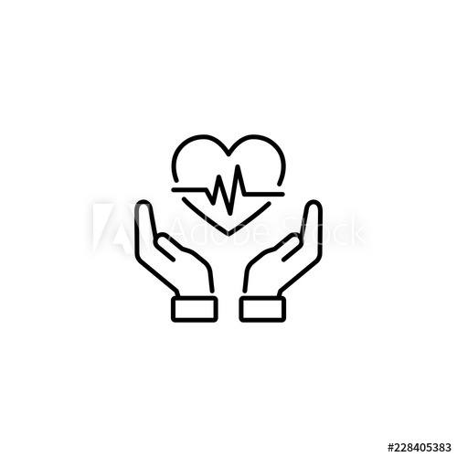

Main page
 Time for medicineee
Vaccination
 The most suitable time for a puppy to take vaccination is at eight to ten weeks (four-six weeks can be, too). You should talk with vet to have a clear and flexible schedule for your cute hommies. After from 6 to 12 months of age, your pet will need a booster vaccination to ensure and maintain efficiency of the vaccination.
There are two sets of vaccination to begin with. The first one is when your kitten reaches 9 weeks old and the second one should be occured at 3 month olds for boosting their immune system. Kittens and cats should be taken vaccination every 12 months (recommend).
The most suitable time for a puppy to take vaccination is at eight to ten weeks (four-six weeks can be, too). You should talk with vet to have a clear and flexible schedule for your cute hommies. After from 6 to 12 months of age, your pet will need a booster vaccination to ensure and maintain efficiency of the vaccination.
There are two sets of vaccination to begin with. The first one is when your kitten reaches 9 weeks old and the second one should be occured at 3 month olds for boosting their immune system. Kittens and cats should be taken vaccination every 12 months (recommend).
You should also keep your kitten inside until it has fully received the required vaccination!
Main page